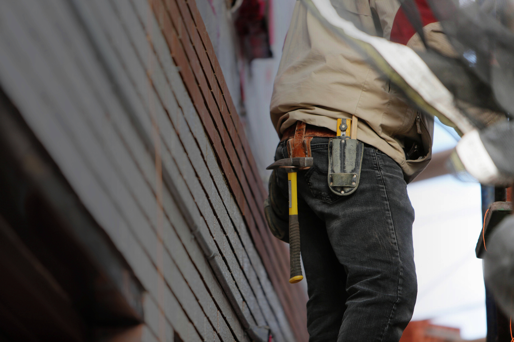

Carpentry
Shelf building, trim touch-ups, and small repairs.
One-call help for small projects that need to get done right.
A solo handyman brand in Irvine offering carpentry and minor repair work, with a focus on quick household fixes.
Photo highlights
Pulled from the business's public web presence so the homepage feels more like the company itself.
A straightforward menu of work the business already appears to offer publicly, organized so people can understand it at a glance.
Shelf building, trim touch-ups, and small repairs.
Simple organization and custom-fit storage updates.
Minor repairs and one-off household tasks.
A clear call button and quote form for quick inquiries.
Real photos from the public Wix site, used to make the handyman brand feel less generic.


Built around the city listed in public directories and the surrounding nearby cities that make sense for this business.
This draft can grow into separate landing pages for the most important jobs or customer types.
Make it easy to call or request an estimate in one tap.
Separate the highest-value jobs into dedicated pages for better clarity and SEO.
Add real project photos, review snippets, and trust signals as they become available.
Keep the site focused on Irvine and nearby cities so it feels local fast.
Call (646) 644-2923 or use a simple form to request help. The next version of this site can also link to photos, reviews, and service-specific pages.